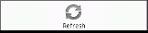

Connexions Android Application
Welcome to the Connexions Android Application!
Connexions is an environment for collaboratively developing, freely
sharing, and rapidly publishing scholarly content on the Web. Our
repository contains educational materials for everyone from children
to college students to professionals organized in small modules that
are easily connected into larger collections or courses. All content is
free to use and reuse under the Creative
Commons "attribution"
license.
Search
From the menu on
any screen, the Search popup window can be opened. Enter a term
or subject and touch the Search button. If you are looking for
textbooks or
courses in Connexions, follow your search terms with the word course or
textbook. This will bring that type of content to the top of the
search results.
You can save a search to your Favorites by selecting the Menu button on
your Android device when viewing the search results and selecting the
"Add to favorites" button. You can then see your saved search in
the Favorites screen
Opening Screen
Book Lists are public groups of content that are created by individuals or
organizations. When the Browse Book Lists option is selected from the Landing screen, the application
displays a list of available
book lists along with featured content from the Connexions web site.
Selecting one of the options will
display the book list's contents.
Book Lists are displayed with the default book list icon: or with the owner assigned icon.
Context Menu
Holding a finger on any item in a book list or touching the menu
button will bring up the
menu.
If the book lists are not retrieved, you can try again by
selecting the Menu button on your Android device and selecting Refresh
from the menu.

Book List Content List
The Book List Content List displays the Chapters and Books that are
part of the selected Book List. Select of a chapter or a book to display the contents.
Chapters are displayed with the chapter icon:
Books are displayed with the book icon:
Book List Content List Menu
Holding a finger on any item in the Book List Content List will bring up the
menu.
Favorites
The Connexions Android application can store a list of favorite
searches, book lists,
books or chapters. This provides quick and easy access to
the content you need. This list of Favorites is not the same list
as Favorites on the Connexions site. No login is required to
store Favorites in the Android application.
Accessing Favorites
The Favorites can be accessed from the Favorites option on the Landing screen or from other parts of
the application by using
the menus and selecting the Home option.
Adding to Favorites
To add an item to Favorites from the Book List screen or a Book List Content List
- Hold a finger on the item to be added to Favorites.
- The menu will display
- Select "Add to Favorites"
To add an item to Favorites from a book or chapter display or from Search
Results
- Select the Android device menu button
- Select "Add to Favorites"
Deleting from Favorites
To delete an item from the Favorites list
- Hold a finger on the item to be deleted from Favorites.
- The menu will display
- Select "Delete from Favorites"
Book and Chapter Display
When viewing a book or chapter, you can zoom either by pinch and zoom or with the displayed toggle. To view the contents of a book, select
items from the table of contents on the first page of the book.
Downloading Files
When viewing content (a chapter or book), the PDF or EPUB of the
content can be downloaded to your phone using the application
menu or the ActionBar at the bottom of the screen. When you select to
download from the menu or the ActionBar, a popup will tell you where the file will be stored and
you will be
asked to confirm the download. Files are downloaded to a
Connexions directory either on your phone's memory or an SD Card if
your phone has one. If your device has an SD Card slot, but the
slot is empty, you will not be able to download files until
a card is in the slot. The EPUB or PDF that is downloaded can be
viewed by using a
separate app for the file type.
Viewing and Deleting Downloaded Files
From almost any menu and from the Landing screen, there is an option to "View Downloaded
Files". Selecting this option will display a list of PDF or EPUB
files that have been downloaded from Connexions. Selecting a file
from the list will give the choice to open and view the
file. If viewing is selected, Connexions for Android will try and
open the file in a different application for that file type. An
example is if a PDF file is selected Connexions for Android will try to
open the file using an app for viewing PDFs such as Adobe Acrobat
Reader for Android. EPUB files can be viewed in an ebook reader
such as Aldiko.
Files can be deleted from the SD Card by pressing down on the item
until a menu is displayed. The only menu option is to delete the
selected file. Confirm the delete and the file is removed from the
phone.
Taking Notes
When viewing content, you can take notes by selecting the "Add Note" menu item. The Note Editor will open. After editing the note, selecting the phone Back button
will return you to the content and automatically save the note. You can also touch the Save button on the ActionBar to save and return you to the content. There are also menu options to revert the note to the last saved state and the delete the note.
Notes can also be exported to a text file that can be moved off the phone and shared. Choose Export from the ActionBar or from the menu. Notes are exported to the Connexions folder on your phone's SDCard or memory if
there is no SDCard.
Additional Help
For additional help or to send comments, suggestions or feature
requests, email Connexions at techsupport@cnx.org. We can't
improve the application if we don't hear from you.
Portions of this page are modifications based on
work created and shared by Google and used according to terms described
in the Creative Commons 3.0 Attribution License.